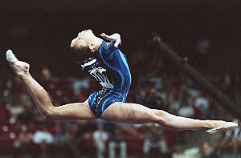

Terin Humphrey (USA)
2004 Olympic UB Silver Medalist

Medal Total
Olympic Games: 2
Silver
World Championships: 1 Gold
Terin was born on August 14, 1986 in Missouri. She started gymnastics as a toddler. She was coached by Al Fong and Armine Barutian-Fong at Great American Gymnastics Express (GAGE) for most of her career. Following the Athens Olympics, where she won 2 silver medals, Terin entered the University of Alabama on a full gymnastics scholarship.
Competition Results
1999
JO Nationals (age 9-12): 3rd AA
Jr. US Championships: 16th AA
Jr. US Classic: 16th AA
Jr. USA-FRA Dual Meet: 4th AA
2000
Intl. Team Championships: 1st Team, 3rd AA
Jr. American Classic: 24th AA
Jr. US Classic "A": 5th AA
2001
American Team Cup: 1st Team, 8th AA
Jr. US Championships: 14th AA
Jr. US Classic "A": 5th AA
2002
American Classic: 8th AA
Gymnix International: 3rd AA
Pacific Alliance Championships: 2nd AA, 4th UB
Parkette Invitational: 2nd AA
US Championships: 7th AA
US Classic: 4th AA
USA-BRA-UKR Meet: 3rd AA
USA-MEX Dual Meet: 1st Team, 2nd AA
World Championships: 9th V (semis), 11th FX (semis)
2003
American Classic: 7th AA
Parkette Invitational: 4th AA
Podium Meet: 2nd AA
US Championships: 6th AA
US Classic: 3rd AA
World Championships: 1st Team
2004
American Cup: 5th AA
Olympic Games: 2nd Team, 2nd UB
US Championships: 3rd AA
US Olympic Trials: 7th AA
2005
NCAA Championships: 2nd Team, 7th AA, 1st UB, 5th B, 5th FX
SEC Championships: 3rd Team, 1st UB
2006
NCAA Championships: 3rd Team, 10th AA, 4th B
SEC Championships: 2nd Team
Super Six Challenge: 1st Team
2007
NCAA Championships: 1st UB, 8th B
This page was created on November
24, 2005 and was last updated on May 19, 2007.
© Gymn Forum